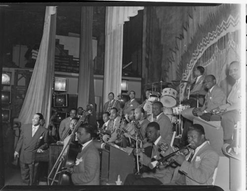
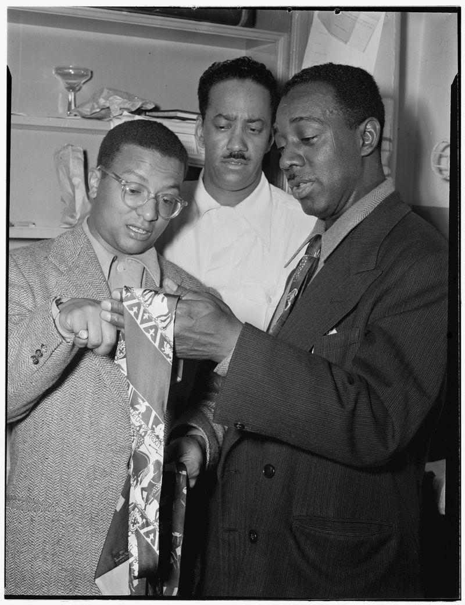
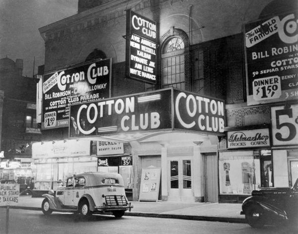
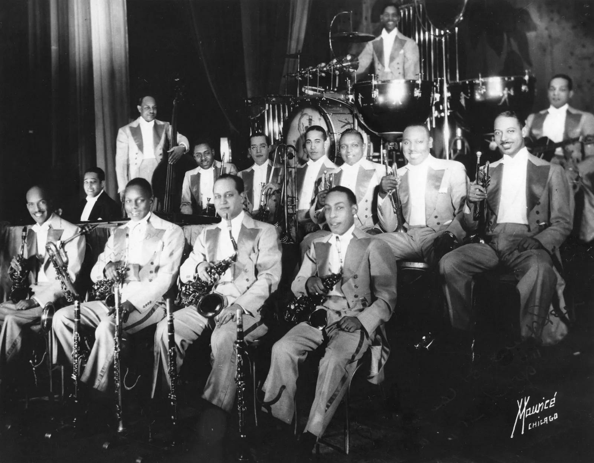
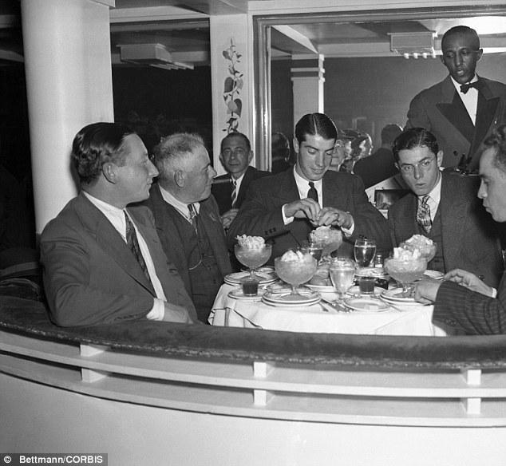
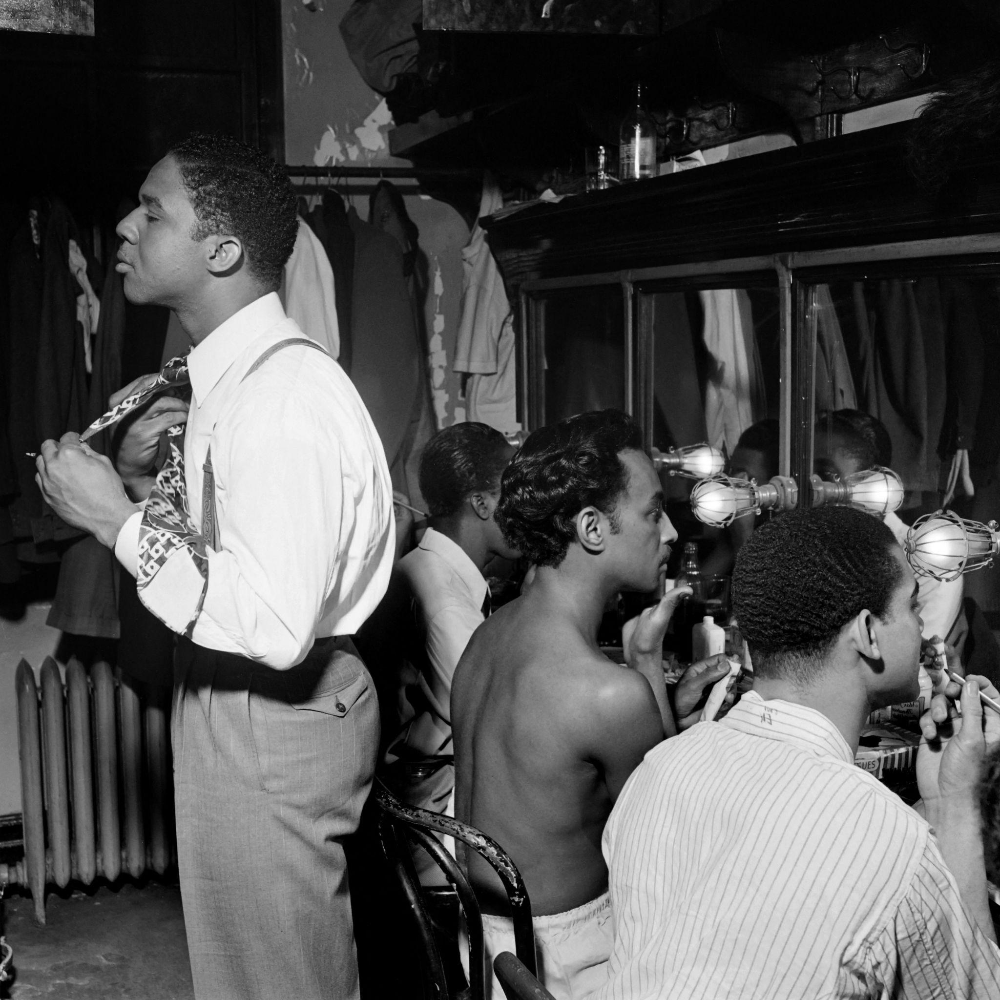

Harlem, late 1920s — backstage at the Cotton Club
You’re not supposed to be part of the night. You’re what’s left after it.
Backstage is narrower than it should be—coats on hooks, cables underfoot, a piano that looks better from the audience than it does up close. You move between rooms with a rag and a bucket, clearing glasses, wiping down surfaces that will be dirty again in minutes.
Out front, the room is all glow and control. Inside, it’s heat and proximity.
The sound bleeding through
The band is mid-set.
Duke Ellington isn’t just keeping time—he’s shaping it. The orchestra moves like a single organism: brass rising, reeds sliding, rhythm section locking it all down.
You hear the crowd react—laughter, applause—but it’s filtered, distant, like it belongs to another building.
The contradiction you can’t ignore
You step out just far enough to see the room.
White patrons at the tables. Black performers on the stage.
That’s the arrangement.
It’s polished, successful, even celebrated—but it’s also fixed. You feel it in the way people are allowed to move, and where they’re not.
Backstage, no one needs to say it. Everyone already knows.
Between sets
The music cuts cleanly. Applause swells, then fades as the curtain shifts.
The band filters back in—loosening ties, wiping sweat, talking in fragments. The room exhales.
And there—leaning near the piano, out of place but trying not to be—is George Gershwin.
He’s dressed down—almost like staff, a kind of camouflage. Not quite convincing, but enough to pass without drawing the wrong attention.
He isn’t performing tonight. He’s listening.
The conversation
Ellington comes off the stage still carrying the tempo in his body.
Gershwin says something about the voicing—how the brass sat against the rhythm, how the harmony shifted without announcing itself.
Ellington smiles slightly. He’s heard this kind of curiosity before, but not always from someone who understands what they’re hearing.
They sit at the piano—no audience now.
Ellington plays a fragment—compact, deliberate
Gershwin answers—stretching it, adding color
They’re not competing. They’re circling the same idea from different angles.
You pause longer than you should.
What you notice
Out front, the music is spectacle.
Back here, it’s construction.
And the line between the two is thinner than it looks.
The tension underneath
You go back to work, but it stays with you:
The brilliance of what’s being played
The limits placed on who gets to sit where and do what
The fact that even here—backstage, informal—that structure doesn’t disappear
Gershwin can move between worlds more easily. Ellington cannot—not in the same way.
Everyone knows it. No one says it.
The feeling that remains
When the next set starts, the room snaps back into performance.
But you’ve seen the other side:
The place where the music is real—and the system around it is just as real.
And neither cancels the other out.